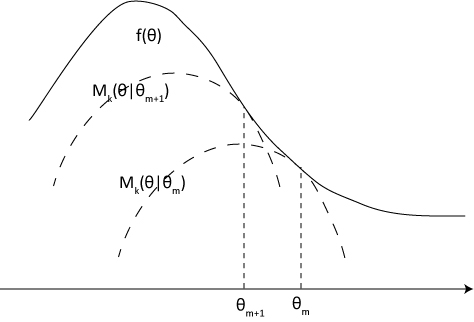
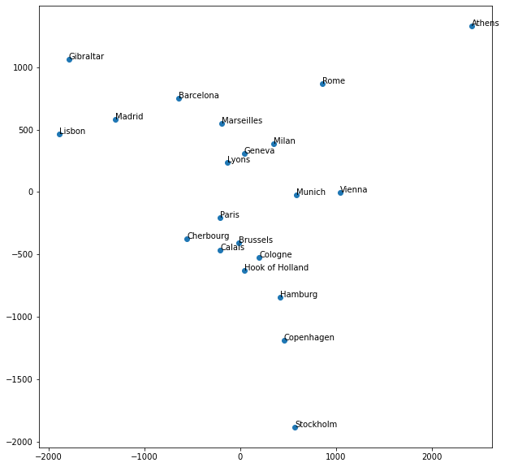
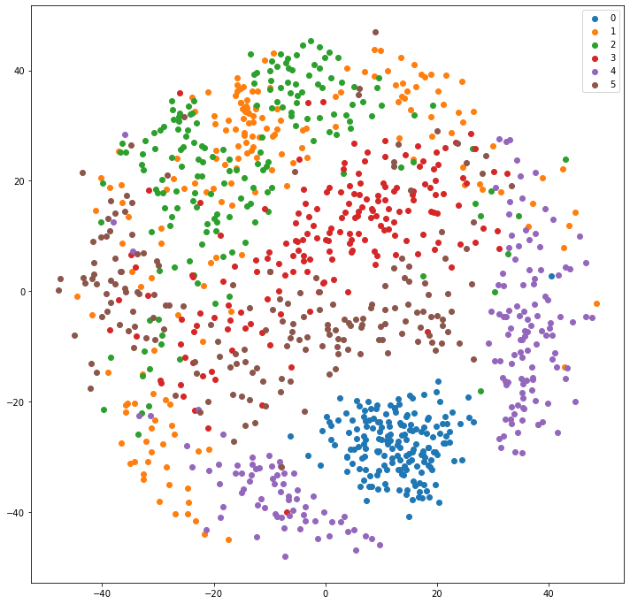
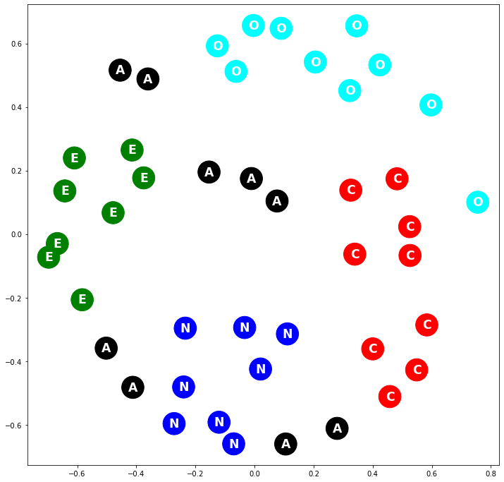

Other Dimensionality Reduction Methods¶
Multidimensional Scaling (MDS)¶
Multidimensional Scaling works directly on the distance or dissimilarity matrix \(D\) and tries to find a set of vectors \(z_i\) that reproduces the distance matrix (preserves pairwise distance) as close as possible, with the liberty of choosing the dimensions of the \(z_i\).
MDS can be classified onto metric, and non metric MDS. Metric MDS tries to preserve the actual distance values in the distance matrix, while non-metric MDS just preserves the rank. Classical MDS and the least squares scalings are metric scalings, and Shephard-Kruskal is a non-metric scaling.
Classical MDS¶
Classical MDS is a linear dimensionality reduction method. To perform classical MDS, we first transform the distance matrix into a centered Gram matrix, through the equation
where \(M = \frac{1}{N}\vec{1}\vec{1}^T\) is the mean operator, and \(D^2\) is the squared distance matrix, not \(DD\). As en exercise, prove the previous statement.
The Gram matrix, being positive semi-definite, can be factorized as \(G=XX^T\), so that \(g_{ij} = x_i^T x_j\). Classical MDS seeks to minimize
But this is same objective as PCA, only applied to the Gram matrix instead of the covariance matrix. The best low rank approximation is given by the eigen-decomposition of the Gram matrix, \(G=U S^2 U^T\), such that \(Z = U_q S_q\). From this discussion, it is clear that classical MDS is equivalent to PCA if euclidean distances are used. In fact, if the distances are Euclidean, the full rank model recovers the exact original configuration of points.
Note that classical MDS assumes euclidean distances, so as to have a positive semi-definite Gram matrix. For non-euclidean distances, negative eigenvalues arise from the decomposition, which mean we cannot take \(S = \sqrt(S^2)\) on the diagonal elements. In such cases, we can restrict the solution to the coordinates associated with positive eigenvalues, still obtaining a solution, but the solution is no longer equivalent to PCA.
Least squares or Kruskal-Shephard scaling¶
In metric MDS, the coordinates \(z_i\) are found by minimizing the stress function,
This objective does not have a closed form solution, and must be optimized numerically. The solution are no longer the same as those obtained from PCA, and can be non-linear.
The stress can be minimized with a number of optimizes, including the ones based on gradient descent. If the Euclidean distance is used, the SMACOF (Scaling by MAjorizing a COmplicated Function) algorithm can be used. SMACOF is a majorize-minimization (MM) algorithm, in which instead of minimizing the objective directly, we minimize a lower bound, the majorizing function.
A general MM algorithm works as follows. Let \(f(x)\) be the function to be minimized. The majorized function \(g(x, x_m)\) must satisfy
The point \(x_{m}\) is where \(g(x|x_{m})\) touches \(f(x)\). At each iteration we find the minimum of \(g\) and move \(x_m\) to this new minimum.
The above iterative method will guarantee that \(f(x_{m})\) will converge to a local optimum or a saddle point as \(m\) goes to infinity.
In the following figure from Wikipedia illustrates the process for maximization.

A possible majorizing function for the stress can be obtained from the stress function,
The first term is constant. The second term is squared in the \(z_i\) and can be written as
so,
Another way to derive the above expression is taken from the definitive book on MDS [1]. Consider the distance \(|z_i - z_j|\), it can be expressed as a sum over columns of the matrix \(Z\), \(z_{il} - z_{jl} = (e_i - e_j)^T Z_{:l}\), where the \(e_i\) are Cartesian unit versors. Each \(e_i\) selects component \(i\) from each column of \(Z\), so that \((z_{il} - z_{jl})^2 = Z_{:l}^T (e_i - e_j) (e_i - e_j)^T Z_{:l}\). The squared distance is then
where \(A_{ij} = (e_i - e_j)(e_i - e_j)\) is a matrix with \(a_{ii} = a_{ij}1\) and \(a_{ij} = a_{ji} = -1\). Then,
where \(V = \sum A_{ij} = nP\).
This second term is quadratic and easy to optimize.
Using the Cauchy–Schwarz inequality, \(|\left<u,v\right>\leq |u||v|\), we can obtain a majorizing function for the third term. For an arbitrary matrix \(Y\), which will act as \(x_{m}\) in the MM algorithm,
from which we can write
Then, for the third term we have
The third term can be written as
where \(B(Y) = \left(\sum_{i < j} b_{ij}A_{ij}\right)\), and
So the third term is majorized by a linear function.
For the complete stress,
Now, to optimize the majorizing function we take its derivative
so that
Note that \(V\) is not full rank, so it does not have an inverse. Still, we can use the Moore-Penrose inverse of \(V\), \(V^+ = (V + \vec{1}\vec{1}^T})^{-1} - \frac{\vec{1}\vec{1}^T}{n^{2} = n(I-M)\). The update is
which is called the Guttman transform.
So, to minimize the stress, we apply an MM algorithm using the above update rule. An implementation in PySpark can be found here, Scikit Learn also implements SMACOF for MDS.
Sammon mapping¶
The Sammon mapping is a modification to the MDS stress function
This stress weights each distance difference by the inverse of the original distance, and gives more importance to preserving small distances than large distances.
Shephard-Kruskal non-metric scaling¶
When the distances are only qualitative and we are interested in preserving only their relative ordering, we can optimize a stress that uses only ranks,
where \(\theta\) is a monotonically increasing function. Optimizing non-metric stress can be done in two steps, optimize over the \(z_{i}\) with fixed \(\theta\), then finding an appropriate \(\theta\), for example using isotonic regression.
Fig. 17 Source: https://www.stat.pitt.edu/sungkyu/course/2221Fall13/lec8_mds_combined.pdf¶
Example: Road Distance¶
The following is a road distance (km) matrix between European cities. We use MDS to approximate coordinates in 2D.
import numpy as np
import pandas as pd
import matplotlib.pyplot as plt
d_cities = pd.read_csv('Data/eurodist.csv', index_col='city')
d_cities
city |
Athens |
Barcelona |
Brussels |
Calais |
Cherbourg |
Cologne |
Copenhagen |
Geneva |
Gibraltar |
Hamburg |
Hook of Holland |
Lisbon |
Lyons |
Madrid |
Marseilles |
Milan |
Munich |
Paris |
Rome |
Stockholm |
Vienna |
|---|---|---|---|---|---|---|---|---|---|---|---|---|---|---|---|---|---|---|---|---|---|
Athens |
0 |
3313 |
2963 |
3175 |
3339 |
2762 |
3276 |
2610 |
4485 |
2977 |
3030 |
4532 |
2753 |
3949 |
2865 |
2282 |
2179 |
3000 |
817 |
3927 |
1991 |
Barcelona |
3313 |
0 |
1318 |
1326 |
1294 |
1498 |
2218 |
803 |
1172 |
2018 |
1490 |
1305 |
645 |
636 |
521 |
1014 |
1365 |
1033 |
1460 |
2868 |
1802 |
Brussels |
2963 |
1318 |
0 |
204 |
583 |
206 |
966 |
677 |
2256 |
597 |
172 |
2084 |
690 |
1558 |
1011 |
925 |
747 |
285 |
1511 |
1616 |
1175 |
Calais |
3175 |
1326 |
204 |
0 |
460 |
409 |
1136 |
747 |
2224 |
714 |
330 |
2052 |
739 |
1550 |
1059 |
1077 |
977 |
280 |
1662 |
1786 |
1381 |
Cherbourg |
3339 |
1294 |
583 |
460 |
0 |
785 |
1545 |
853 |
2047 |
1115 |
731 |
1827 |
789 |
1347 |
1101 |
1209 |
1160 |
340 |
1794 |
2196 |
1588 |
Cologne |
2762 |
1498 |
206 |
409 |
785 |
0 |
760 |
1662 |
2436 |
460 |
269 |
2290 |
714 |
1764 |
1035 |
911 |
583 |
465 |
1497 |
1403 |
937 |
Copenhagen |
3276 |
2218 |
966 |
1136 |
1545 |
760 |
0 |
1418 |
3196 |
460 |
269 |
2971 |
1458 |
2498 |
1778 |
1537 |
1104 |
1176 |
2050 |
650 |
1455 |
Geneva |
2610 |
803 |
677 |
747 |
853 |
1662 |
1418 |
0 |
1975 |
1118 |
895 |
1936 |
158 |
1439 |
425 |
328 |
591 |
513 |
995 |
2068 |
1019 |
Gibraltar |
4485 |
1172 |
2256 |
2224 |
2047 |
2436 |
3196 |
1975 |
0 |
2897 |
2428 |
676 |
1817 |
698 |
1693 |
2185 |
2565 |
1971 |
2631 |
3886 |
2974 |
Hamburg |
2977 |
2018 |
597 |
714 |
1115 |
460 |
460 |
1118 |
2897 |
0 |
550 |
2671 |
1159 |
2198 |
1479 |
1238 |
805 |
877 |
1751 |
949 |
1155 |
Hook of Holland |
3030 |
1490 |
172 |
330 |
731 |
269 |
269 |
895 |
2428 |
550 |
0 |
2280 |
863 |
1730 |
1183 |
1098 |
851 |
457 |
1683 |
1500 |
1205 |
Lisbon |
4532 |
1305 |
2084 |
2052 |
1827 |
2290 |
2971 |
1936 |
676 |
2671 |
2280 |
0 |
1178 |
668 |
1762 |
2250 |
2507 |
1799 |
2700 |
3231 |
2937 |
Lyons |
2753 |
645 |
690 |
739 |
789 |
714 |
1458 |
158 |
1817 |
1159 |
863 |
1178 |
0 |
1281 |
320 |
328 |
724 |
471 |
1048 |
2108 |
1157 |
Madrid |
3949 |
636 |
1558 |
1550 |
1347 |
1764 |
2498 |
1439 |
698 |
2198 |
1730 |
668 |
1281 |
0 |
1157 |
1724 |
2010 |
1273 |
2097 |
3188 |
2409 |
Marseilles |
2865 |
521 |
1011 |
1059 |
1101 |
1035 |
1778 |
425 |
1693 |
1479 |
1183 |
1762 |
320 |
1157 |
0 |
618 |
1109 |
792 |
1011 |
2428 |
1363 |
Milan |
2282 |
1014 |
925 |
1077 |
1209 |
911 |
1537 |
328 |
2185 |
1238 |
1098 |
2250 |
328 |
1724 |
618 |
0 |
331 |
856 |
586 |
2187 |
898 |
Munich |
2179 |
1365 |
747 |
977 |
1160 |
583 |
1104 |
591 |
2565 |
805 |
851 |
2507 |
724 |
2010 |
1109 |
331 |
0 |
821 |
946 |
1754 |
428 |
Paris |
3000 |
1033 |
285 |
280 |
340 |
465 |
1176 |
513 |
1971 |
877 |
457 |
1799 |
471 |
1273 |
792 |
856 |
821 |
0 |
1476 |
1827 |
1249 |
Rome |
817 |
1460 |
1511 |
1662 |
1794 |
1497 |
2050 |
995 |
2631 |
1751 |
1683 |
2700 |
1048 |
2097 |
1011 |
586 |
946 |
1476 |
0 |
2707 |
1209 |
Stockholm |
3927 |
2868 |
1616 |
1786 |
2196 |
1403 |
650 |
2068 |
3886 |
949 |
1500 |
3231 |
2108 |
3188 |
2428 |
2187 |
1754 |
1827 |
2707 |
0 |
2105 |
Vienna |
1991 |
1802 |
1175 |
1381 |
1588 |
937 |
1455 |
1019 |
2974 |
1155 |
1205 |
2937 |
1157 |
2409 |
1363 |
898 |
428 |
1249 |
1209 |
2105 |
0 |
from sklearn.manifold import MDS
X = d_cities.values
embedding = MDS(n_components=2, dissimilarity='precomputed')
Z = embedding.fit_transform(X)
fig = plt.figure(figsize=(10,10))
plt.scatter(Z[:,0], Z[:,1])
for i, label in enumerate(d_cities):
plt.text(s=label, x=Z[i,0], y=Z[i,1])

The output approximates the European layout up to rotations and reflections.
Example: Digits¶
from sklearn import datasets
digits = datasets.load_digits(n_class=6)
X = digits.data
y = digits.target
mds = MDS(n_components=2, n_init=1, max_iter=100)
Z = mds.fit_transform(X)
plt.figure(figsize=(12,12))
for i in range(6):
Zd = Z[y==i]
plt.scatter(Zd[:,0], Zd[:,1], label=i)
plt.legend();

Example: Correlation tables¶
From Wikipedia
The Big Five personality traits, also known as the five-factor model (FFM) and the OCEAN model, is a taxonomy, or grouping, for personality traits. When factor analysis (a statistical technique) is applied to personality survey data, some words used to describe aspects of personality are often applied to the same person. For example, someone described as conscientious is more likely to be described as “always prepared” rather than “messy”. This theory is based therefore on the association between words but not on neuropsychological experiments. This theory uses descriptors of common language and therefore suggests five broad dimensions commonly used to describe the human personality and psyche.
We load a data set with answers to the Big Five questionnaire, and find the correlation among questions. The idea is that questions corresponding to the same personality trait should be answered in a similar way by similar people. The correlation matrix can be transformed into a distance matrix using \(d = 1 - |\rho|\), and the MDS analysis is performed. Clusters for questions belonging to similar traits are identifiable.
b5 = pd.read_csv('Data/bigfive.csv', index_col='Subnum')
print(b5.head())
Q1 Q2 Q3 Q4 Q5 Q6 Q7 Q8 Q9 Q10 ... Q35 Q36 Q37 \
Subnum ...
1 3.0 4 4.0 2.0 3.0 4.0 5.0 4.0 5 5 ... 5.0 3.0 3.0
2 4.0 4 3.0 2.0 3.0 3.0 3.0 4.0 3 5 ... 4.0 5.0 5.0
3 2.0 2 5.0 1.0 3.0 4.0 4.0 4.0 5 3 ... 5.0 4.0 2.0
4 3.0 3 4.0 4.0 2.0 4.0 5.0 2.0 4 4 ... 4.0 3.0 2.0
5 2.0 4 4.0 4.0 4.0 5.0 3.0 2.0 1 4 ... 2.0 2.0 1.0
Q38 Q39 Q40 Q41 Q42 Q43 Q44
Subnum
1 2.0 3.0 1.0 4.0 2.0 4.0 4
2 4.0 4.0 4.0 3.0 5.0 4.0 5
3 3.0 2.0 1.0 NaN 5.0 2.0 4
4 2.0 3.0 3.0 4.0 4.0 4.0 4
5 3.0 4.0 5.0 4.0 1.0 2.0 4
[5 rows x 44 columns]
X = b5.corr()
X = X.values
X = 1 - np.abs(X)
factors = ["E", "A", "C", "N", "O", "E", "A", "C", "N", "O", "E",
"A", "C", "N", "O", "E", "A", "C", "N", "O", "E", "A",
"C", "N", "O", "E", "A", "C", "N", "O", "E", "A", "C",
"N", "O", "E", "A", "C", "N", "O", "O", "A", "C", "O"]
cmap = {'O': 'cyan', 'E':'green', 'N':'blue', 'A':'black', 'C':'red'}
colors = [cmap[k] for k in factors]
mds = MDS(n_components=2, dissimilarity='precomputed')
Z = mds.fit_transform(X)
plt.figure(figsize=(12,12))
plt.scatter(Z[:,0], Z[:,1], c=colors, s=1000)
for i, label in enumerate(factors):
plt.text(s=label, x=Z[i,0], y=Z[i,1], c='white', fontweight='bold', size='xx-large', ha='center', va='center')
